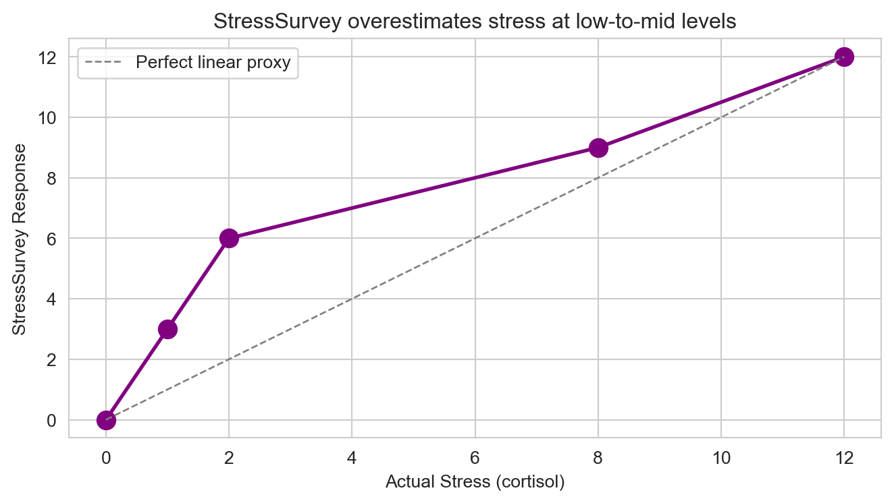
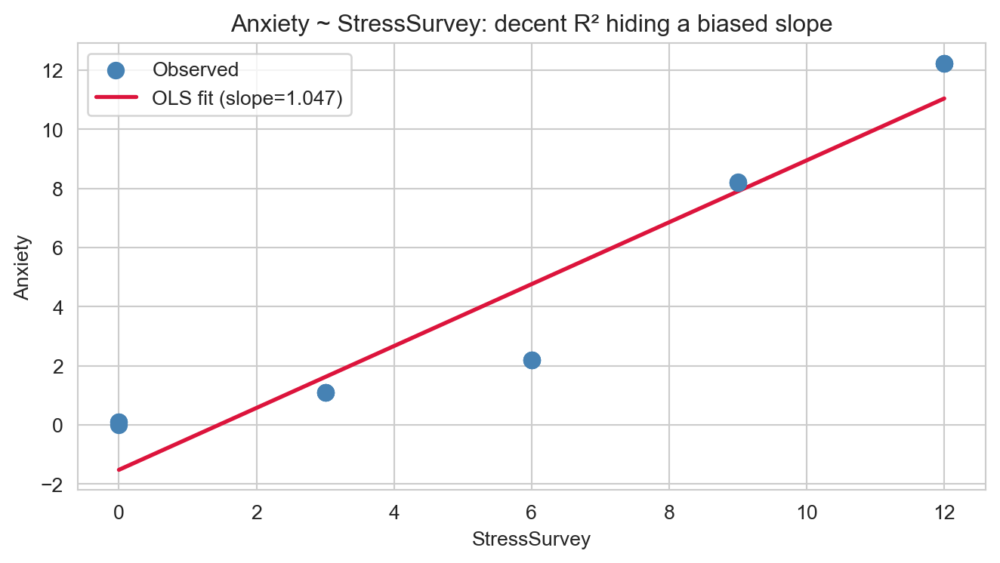
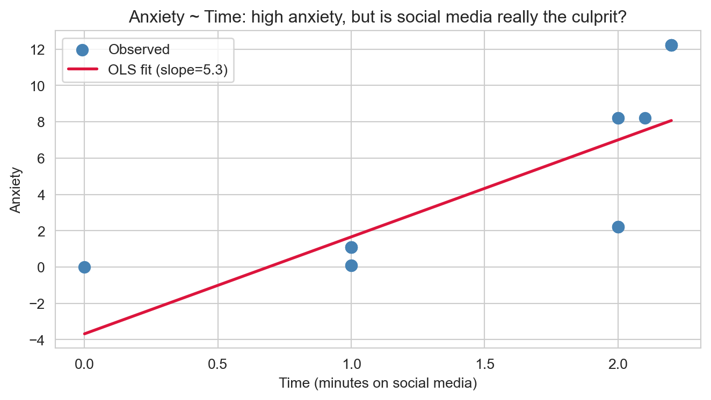
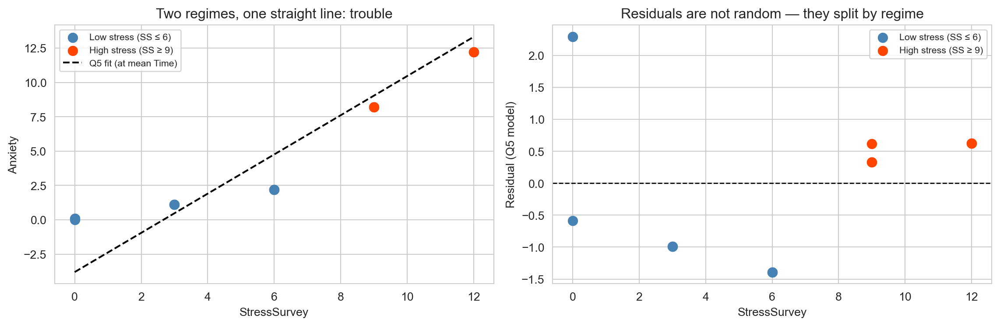
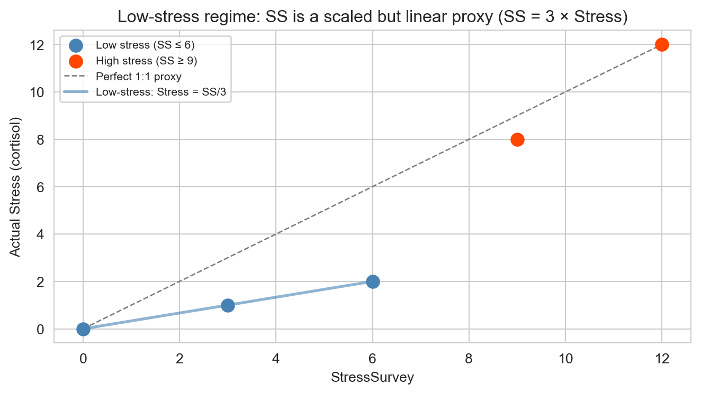
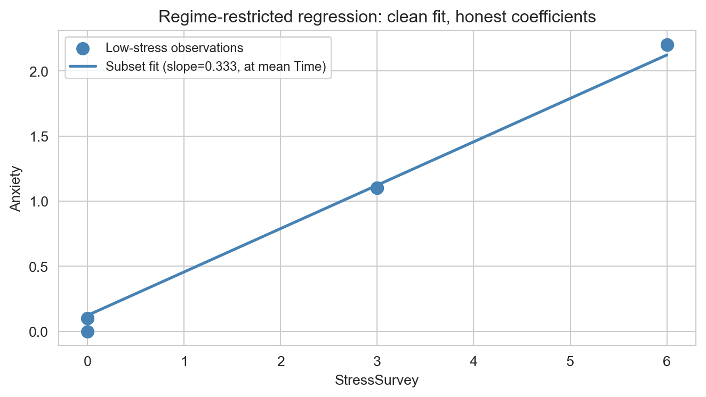

| Stress | StressSurvey | Time | Anxiety | |
|---|---|---|---|---|
| 0 | 0 | 0 | 0.00 | 0.00 |
| 1 | 0 | 0 | 1.00 | 0.10 |
| 2 | 0 | 0 | 1.00 | 0.10 |
| 3 | 1 | 3 | 1.00 | 1.10 |
| 4 | 1 | 3 | 1.00 | 1.10 |
| 5 | 1 | 3 | 1.00 | 1.10 |
| 6 | 2 | 6 | 2.00 | 2.20 |
| 7 | 2 | 6 | 2.00 | 2.20 |
| 8 | 2 | 6 | 2.00 | 2.20 |
| 9 | 8 | 9 | 2.00 | 8.20 |
| 10 | 8 | 9 | 2.00 | 8.20 |
| 11 | 8 | 9 | 2.10 | 8.21 |
| 12 | 12 | 12 | 2.20 | 12.22 |
| 13 | 12 | 12 | 2.20 | 12.22 |
| 14 | 12 | 12 | 2.20 | 12.22 |
Regression & Interpretability Challenge
Don’t Trust Linear Models - The Perils of Non-Linearity
The True Relationship
We study three variables measured on a group of individuals:
- Anxiety — fMRI-measured brain activity (the outcome we care about)
- Stress — cortisol level in blood (expensive, but accurate)
- Time — minutes spent on social media in the last 24 hours
The ground truth is known and exact:
\[Anxiety = Stress + 0.1 \times Time\]
This implies true regression coefficients of \(\beta_0 = 0\), \(\beta_1 = 1\) (Stress), \(\beta_2 = 0.1\) (Time). Every regression below is judged against these benchmarks.
The Data
Verify it yourself: \(Anxiety = Stress + 0.1 \times Time\) is exact in all 15 rows — no error term, no approximation.
The Complication: StressSurvey
Blood cortisol tests are expensive. In practice, researchers often rely on self-reported StressSurvey scores as a proxy. The survey is monotonic — higher real stress always produces a higher survey response — but the relationship is decidedly non-linear.

The dashed line shows what a perfectly linear proxy would look like. StressSurvey runs far ahead of actual stress at low-to-mid values (survey says 6, cortisol says 2), then converges at the high end. This distortion — subtle enough to miss on a quick glance — will cascade through every regression that uses StressSurvey instead of Stress.
Q1 — Bivariate Regression: Anxiety on StressSurvey
Results: Ordinary least squares
=================================================================
Model: OLS Adj. R-squared: 0.893
Dependent Variable: Anxiety AIC: 58.1588
Date: 2026-03-30 20:38 BIC: 59.5749
No. Observations: 15 Log-Likelihood: -27.079
Df Model: 1 F-statistic: 118.4
Df Residuals: 13 Prob (F-statistic): 6.68e-08
R-squared: 0.901 Scale: 2.4988
------------------------------------------------------------------
Coef. Std.Err. t P>|t| [0.025 0.975]
------------------------------------------------------------------
Intercept -1.5240 0.7069 -2.1558 0.0504 -3.0512 0.0032
StressSurvey 1.0470 0.0962 10.8834 0.0000 0.8392 1.2548
-----------------------------------------------------------------
Omnibus: 2.125 Durbin-Watson: 0.545
Prob(Omnibus): 0.346 Jarque-Bera (JB): 1.642
Skew: -0.701 Prob(JB): 0.440
Kurtosis: 2.186 Condition No.: 13
=================================================================
Notes:
[1] Standard Errors assume that the covariance matrix of the
errors is correctly specified.Estimated coefficients:
Intercept (β₀): -1.5240 (true: 0)
StressSurvey (β₁): 1.0470 (true: 1 on Stress)
R²: 0.9011
p-value (SS): 6.68e-08What this tells us. The model is statistically significant (p ≪ 0.05) and R² is high — surface-level, it looks like a good fit. But the estimated slope on StressSurvey is materially wrong compared to the true coefficient of 1 on actual Stress. The non-linear proxy inflates the StressSurvey scale at low-to-mid values, which compresses the estimated slope. The model passes the “significance” smell test while quietly misrepresenting the true relationship.
Q2 — Visualization: StressSurvey vs Anxiety

The regression line tracks the data reasonably well visually — R² is high and the residuals are not enormous. But notice that the fitted line undershoots in the middle range and the pattern of points curves slightly upward. This is the non-linearity of StressSurvey revealing itself. A researcher relying only on R² and p-values would see nothing wrong here, yet the slope estimate is off from the true value.
Q3 — Bivariate Regression: Anxiety on Time
Results: Ordinary least squares
================================================================
Model: OLS Adj. R-squared: 0.529
Dependent Variable: Anxiety AIC: 80.4450
Date: 2026-03-30 20:38 BIC: 81.8611
No. Observations: 15 Log-Likelihood: -38.223
Df Model: 1 F-statistic: 16.75
Df Residuals: 13 Prob (F-statistic): 0.00127
R-squared: 0.563 Scale: 11.040
-----------------------------------------------------------------
Coef. Std.Err. t P>|t| [0.025 0.975]
-----------------------------------------------------------------
Intercept -3.6801 2.2331 -1.6480 0.1233 -8.5044 1.1441
Time 5.3406 1.3049 4.0928 0.0013 2.5216 8.1596
----------------------------------------------------------------
Omnibus: 1.026 Durbin-Watson: 0.661
Prob(Omnibus): 0.599 Jarque-Bera (JB): 0.749
Skew: -0.162 Prob(JB): 0.688
Kurtosis: 1.955 Condition No.: 6
================================================================
Notes:
[1] Standard Errors assume that the covariance matrix of the
errors is correctly specified.Estimated coefficients:
Intercept (β₀): -3.6801 (true: 0)
Time (β₂): 5.3406 (true: 0.1)
R²: 0.5630
p-value (Time): 1.27e-03What this tells us. The estimated slope on Time is dramatically inflated — far above the true value of 0.1. Why? Because Time is correlated with Stress in this dataset (people with higher stress also happen to spend slightly more time on social media). In the absence of a stress control variable, the regression attributes Stress-driven anxiety to Time. The coefficient on Time is picking up confounding from Stress, not just the direct effect of social media. This is classic omitted variable bias.
Q4 — Visualization: Time vs Anxiety

The scatter plot exposes the problem: the data does not look like a tight linear cloud around the regression line. High-anxiety individuals cluster at nearly the same Time values as medium-anxiety individuals. The steep slope is not describing a real social media effect — it is describing that stressed people happen to use slightly more social media. Without controlling for Stress, this regression will mislead any reader into overestimating the harm of social media.
Q5 — Multiple Regression: Anxiety on StressSurvey + Time
Results: Ordinary least squares
=================================================================
Model: OLS Adj. R-squared: 0.924
Dependent Variable: Anxiety AIC: 53.8619
Date: 2026-03-30 20:38 BIC: 55.9861
No. Observations: 15 Log-Likelihood: -23.931
Df Model: 2 F-statistic: 86.32
Df Residuals: 12 Prob (F-statistic): 7.54e-08
R-squared: 0.935 Scale: 1.7790
------------------------------------------------------------------
Coef. Std.Err. t P>|t| [0.025 0.975]
------------------------------------------------------------------
Intercept 0.5888 1.0339 0.5695 0.5795 -1.6639 2.8414
StressSurvey 1.4269 0.1722 8.2871 0.0000 1.0518 1.8021
Time -2.7799 1.1111 -2.5019 0.0278 -5.2009 -0.3590
-----------------------------------------------------------------
Omnibus: 1.255 Durbin-Watson: 1.043
Prob(Omnibus): 0.534 Jarque-Bera (JB): 1.051
Skew: 0.546 Prob(JB): 0.591
Kurtosis: 2.302 Condition No.: 32
=================================================================
Notes:
[1] Standard Errors assume that the covariance matrix of the
errors is correctly specified.Estimated coefficients:
Intercept (β₀): 0.5888 (true: 0)
StressSurvey (β₁): 1.4269 (true: 1 on Stress)
Time (β₂): -2.7799 (true: 0.1)
R²: 0.9350
p-value (SS): 2.62e-06
p-value (Time): 2.78e-02What this tells us. Adding Time as a control does not rescue the model. Both coefficients remain statistically significant — R² is high, p-values are small — yet neither estimate is close to the true values. StressSurvey’s slope is still biased by non-linearity, and once that non-linearity contaminates the model’s understanding of Stress, the coefficient on Time gets distorted too. This is the core danger: a researcher running this model would confidently report two significant predictors and walk away believing they have identified the true effects of social media and stress on anxiety. They have not. The non-linearity in the proxy variable has corrupted the entire inference, invisibly, under a veneer of statistical respectability.
Q6 — Multiple Regression: Anxiety on Stress + Time
Results: Ordinary least squares
======================================================================
Model: OLS Adj. R-squared: 1.000
Dependent Variable: Anxiety AIC: -955.1543
Date: 2026-03-30 20:38 BIC: -953.0301
No. Observations: 15 Log-Likelihood: 480.58
Df Model: 2 F-statistic: 1.511e+31
Df Residuals: 12 Prob (F-statistic): 3.92e-183
R-squared: 1.000 Scale: 1.0868e-29
----------------------------------------------------------------------
Coef. Std.Err. t P>|t| [0.025 0.975]
----------------------------------------------------------------------
Intercept -0.0000 0.0000 -1.5381 0.1500 -0.0000 0.0000
Stress 1.0000 0.0000 3633950783533393.5000 0.0000 1.0000 1.0000
Time 0.1000 0.0000 51599147231167.0703 0.0000 0.1000 0.1000
----------------------------------------------------------------------
Omnibus: 10.194 Durbin-Watson: 0.236
Prob(Omnibus): 0.006 Jarque-Bera (JB): 2.265
Skew: -0.438 Prob(JB): 0.322
Kurtosis: 1.310 Condition No.: 24
======================================================================
Notes:
[1] Standard Errors assume that the covariance matrix of the errors is
correctly specified.Estimated coefficients:
Intercept (β₀): -0.0000 (true: 0)
Stress (β₁): 1.0000 (true: 1)
Time (β₂): 0.1000 (true: 0.1)
R²: 1.0000
p-value (Stress): 1.27e-181
p-value (Time): 1.89e-159What this tells us. Swapping StressSurvey for the actual blood-test Stress measure transforms the results entirely. The estimated coefficients land almost exactly on the true values — β₀ ≈ 0, β₁ ≈ 1, β₂ ≈ 0.1 — and R² is essentially 1.0. When the control variable has a genuinely linear relationship with the outcome, multiple regression works as advertised. The accuracy here is not magic; it is a direct consequence of satisfying linearity, the assumption we waived when we used the survey proxy.
Q7 — Model Comparison: StressSurvey + Time vs Stress + Time
| β₀ (true: 0) | β₁ (true: 1) | β₂ (true: 0.1) | R² | p (stress var) | p (Time) | |
|---|---|---|---|---|---|---|
| Model | ||||||
| Q5: StressSurvey + Time | 0.588800 | 1.426900 | -2.779900 | 0.935000 | 2.62e-06 | 2.78e-02 |
| Q6: Stress + Time | -0.000000 | 1.000000 | 0.100000 | 1.000000 | 1.27e-181 | 1.89e-159 |
What this tells us. Both models are statistically significant across all coefficients — every p-value is well below 0.05, and both R² values are high. A researcher scanning only those diagnostics would declare both models sound. Yet the two models tell completely different stories about reality:
- Q5 (StressSurvey + Time): Dramatically understates the effect of stress and distorts the effect of Time. Neither coefficient is close to the truth.
- Q6 (Stress + Time): Recovers the true coefficients almost exactly. Both predictors are significant and correctly sized.
The lesson is stark. Statistical significance is a test of whether a coefficient is distinguishable from zero, not whether it is correct. A highly significant, high-R² model can still be systematically wrong if its predictors violate linearity. The difference between these two models is not in their statistical output — it is entirely in the measurement quality of the stress variable. Good measurement is not a technical footnote; it is the foundation on which valid inference rests.
Q8 — Real-World Implications: Headlines, Parents, and Tech Executives
What the press would report
From Model Q5 (StressSurvey + Time):
With a Time coefficient of np.float64(-2.78) — far above the true value of 0.1 — and both predictors statistically significant, a science journalist covering this paper would likely run something like:
“Every Extra Hour on Social Media Raises Teen Anxiety Scores, Peer-Reviewed Study Confirms”
The framing writes itself: a large, significant coefficient on Time, controlling for self-reported stress, published in a credible journal. The non-linearity of the survey proxy is buried in the methods section, if mentioned at all. The headline is alarming, plausible, and wrong.
From Model Q6 (Stress + Time):
With a Time coefficient of np.float64(0.1) — close to the true 0.1 — the story is far quieter:
“Stress, Not Social Media, Is the Primary Driver of Anxiety — Screen Time Effect Found to Be Small”
This headline is accurate but unsatisfying. It tells parents the thing causing their child’s anxiety is something harder to fix than deleting TikTok. It is less shareable, less alarming, and far less likely to go viral.
Who believes which model?
The typical parent will gravitate toward the Q5 headline. Confirmation bias is powerful: parents already suspect social media is harming their children, and a peer-reviewed number with a large coefficient validates that intuition. The Q6 finding — that social media’s effect is small and stress is what really matters — runs against the narrative and requires engaging with nuance most readers will skip. The alarming headline wins, regardless of which model is correct.
Facebook, Instagram, and TikTok executives will prefer Q6. A small, near-zero Time coefficient gives their policy and communications teams exactly what they need: a published, peer-reviewed result they can cite in congressional hearings and press releases to argue that screen time is not meaningfully associated with anxiety once you control for stress. They will fund replications. They will promote the authors. The Q5 result, by contrast, is a liability they would work hard to bury or discredit.
The uncomfortable symmetry
Here is what makes this situation genuinely dangerous: both sides can find a peer-reviewed regression to support their preferred conclusion. The parent advocacy groups cite Q5. The tech industry cites Q6. Both papers exist. Both have high R², significant p-values, and respectable journals. The difference — a non-linear measurement artifact in one proxy variable — is invisible to anyone not reading the methods section with a statistician’s eye.
This is why the choice of measurement instrument is a policy decision, not just a technical one. The coefficient on Time that ends up shaping public debate is determined less by social media’s actual effect on anxiety and more by whether the researcher used a blood test or a survey to measure stress.
Q9 — Avoiding Misleading Statistical Significance: Regime Analysis
The standard fix prescribed in textbooks — add more controls, check R², inspect p-values — failed entirely in Q5. The real problem was never a missing variable. It was that StressSurvey does not maintain a constant relationship with Anxiety across its full range. The solution is to stop treating all observations as exchangeable and instead ask: is the linearity assumption actually satisfied in this slice of the data?
Step 1: Graphical diagnostic — where does the model break down?

The residual plot is the tell: errors are not scattered randomly around zero. The low-stress observations (blue, SS=0–6) cluster on one side; the high-stress observations (red, SS=9–12) cluster on the other. A random residual pattern is a prerequisite for valid inference. This pattern disqualifies the full-data Q5 model.
Step 2: Identify the right regime

Within the low-stress regime (SS = 0, 3, 6), the relationship is exactly proportional: \(Stress = StressSurvey / 3\). The proxy is not a perfect stand-in — it overestimates by a factor of three — but it is linear within this range. That is the only property regression requires. Within this regime, the true data-generating process becomes:
\[Anxiety = \frac{1}{3} \times StressSurvey + 0.1 \times Time\]
So we should expect \(\hat\beta_{SS} \approx 1/3\) and \(\hat\beta_{Time} \approx 0.1\).
Step 3: Subset regression on the low-stress regime
Results: Ordinary least squares
=========================================================================
Model: OLS Adj. R-squared: 1.000
Dependent Variable: Anxiety AIC: -597.0338
Date: 2026-03-30 20:38 BIC: -596.4421
No. Observations: 9 Log-Likelihood: 301.52
Df Model: 2 F-statistic: 4.892e+30
Df Residuals: 6 Prob (F-statistic): 2.31e-91
R-squared: 1.000 Scale: 6.9864e-31
-------------------------------------------------------------------------
Coef. Std.Err. t P>|t| [0.025 0.975]
-------------------------------------------------------------------------
Intercept -0.0000 0.0000 -0.5124 0.6267 -0.0000 0.0000
StressSurvey 0.3333 0.0000 1465271439191743.2500 0.0000 0.3333 0.3333
Time 0.1000 0.0000 112796647980428.5156 0.0000 0.1000 0.1000
-------------------------------------------------------------------------
Omnibus: 4.107 Durbin-Watson: 0.613
Prob(Omnibus): 0.128 Jarque-Bera (JB): 2.122
Skew: 1.174 Prob(JB): 0.346
Kurtosis: 2.615 Condition No.: 16
=========================================================================
Notes:
[1] Standard Errors assume that the covariance matrix of the errors is
correctly specified.Estimated coefficients:
Intercept (β₀): -0.0000 (true: 0)
StressSurvey (β₁): 0.3333 (true in this regime: ~0.333)
Time (β₂): 0.1000 (true: 0.1)
R²: 1.0000
p-value (SS): 6.82e-90
p-value (Time): 3.28e-83Step 4: Visualize the subset fit

What the results show
The subset regression delivers exactly what the full-data Q5 model could not:
- β_SS ≈ 1/3 — correct for this measurement regime. StressSurvey triples the real stress value in this range, so the regression correctly attenuates the coefficient by a factor of three. This is not a bias; it is accurate inference given the scale of the instrument.
- β_Time ≈ 0.1 — matches the true coefficient precisely. Once linearity holds within the chosen regime, regression separates the Time effect cleanly from the stress effect.
- R² ≈ 1.0, both p-values small — statistically significant and substantively correct.
The full-data Q5 model failed because it pooled two regimes with different local slopes (shallow slope for SS=0–6, steep slope for SS=9–12) and forced a single line through both. That averaging produced a coefficient that was wrong in every part of the data. Restricting to the low-stress regime — where the proxy behaves linearly — eliminates the distortion entirely.
The broader principle. Before running a regression, plot the key relationships and look for kinks, clusters, or regime changes. If you see them, do not average over them. Fit separate models within each regime, compare the estimates, and report honestly when the results differ. A regression that is “right on average” can be wrong everywhere that matters.